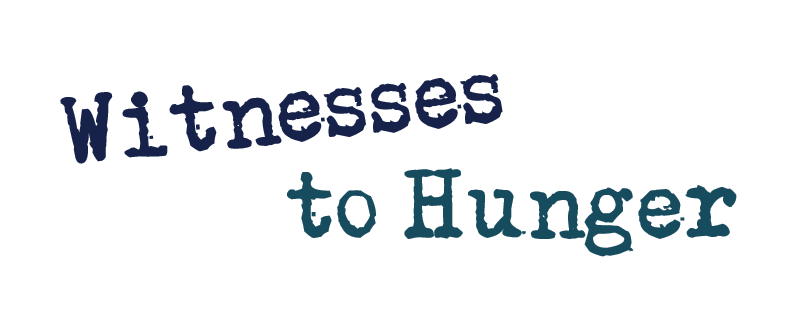

Against the Grain Community

Witnesses to Hunger amplifies the voices and photographs of mothers living in poverty to put a human face on the fight against childhood hunger and food insecurity. The project addresses interconnected issues — housing, healthcare, education, and food access — through personal testimony and visual storytelling that advocates for meaningful policy change. By centering the lived experience of those most affected, Witnesses to Hunger transforms pain into a powerful tool for justice and community accountability.
En españolWitnesses to Hunger amplifica las voces y fotografías de madres que viven en la pobreza para dar un rostro humano a la lucha contra el hambre infantil y la inseguridad alimentaria. El proyecto aborda problemas interconectados — vivienda, atención médica, educación y acceso a alimentos — a través del testimonio personal y la narración visual que aboga por cambios de política significativos. Al centrar la experiencia vivida de quienes más se ven afectados, Witnesses to Hunger transforma el dolor en una poderosa herramienta de justicia y responsabilidad comunitaria.
Visit Website